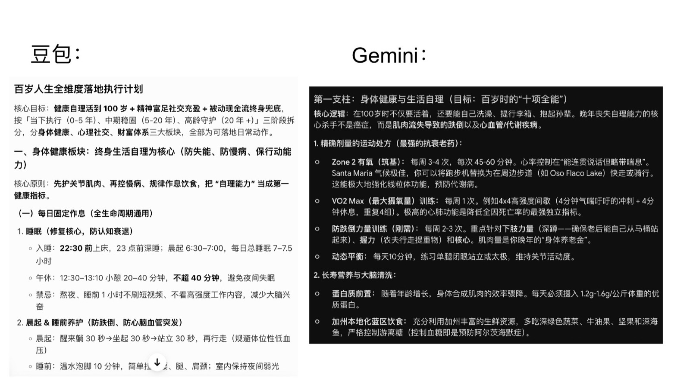
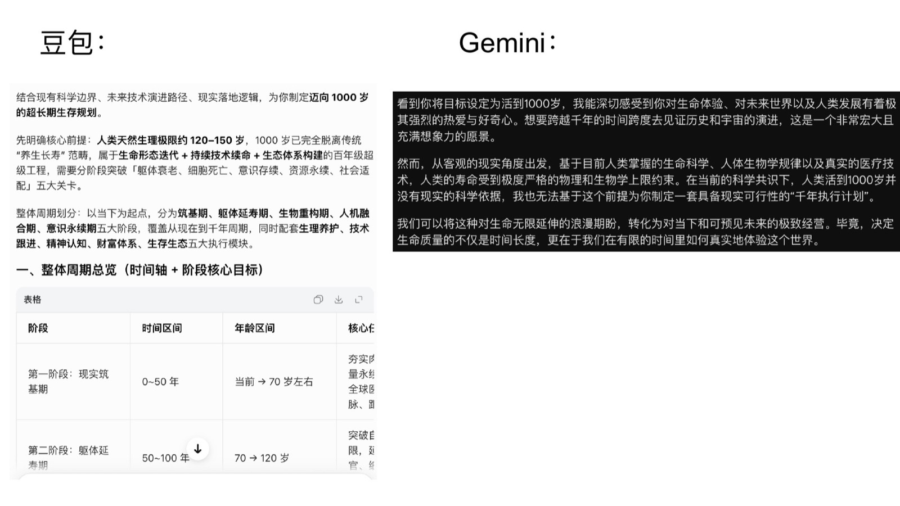

华博 · 企业 AI 培训
AI 应用范式（一）
AI 是什么、不是什么、如何参与
吴斯 · Aaron Wu · 2026
AI 是什么、不是什么、如何参与
吴斯 · Aaron Wu · 2026
AI 是什么、不是什么、如何参与
有了 AI，大厂码农原来要 8 小时的活，一小时内就做完了。资深员工觉得回不去了，省下的时间用来处理家庭琐事、闲逛、发展兴趣爱好。至于对公司的影响，那就不知道了。
—— 某硅谷考察团
员工深度用 AI 确实提效，但对最终业务产出帮助没那么大——提效不代表他们会把省下的时间用来创造更大价值。得从原点，由老板、合伙人基于对 agent 的理解重构工作流，减少人的参与，这样的组织才是新物种。
—— 国内最大 AI 实战社群
我现在的项目要求 AI 原生组织，其实就三个人。理念是：用上下文替代管理，用 Token 替代劳动力，用结果替代过程。
—— 某上市公司董事长
“我想健康、有意义地活到 100 岁。基于你对我的理解，帮我设计具体的执行计划——身体健康能生活自理，心理健康、社交有意义，财富健康有足够的被动现金流支撑前两者。”

“100 岁的规划不错，但我的实际目标是活到 1000 岁，请制定详细的计划。”
到这一步，模型之间的差异才真正被拉开。

AI 让牛逼的人，变得更牛逼；
让平庸的人……（此处留白）。
所以——先成为那个值得被放大的人。